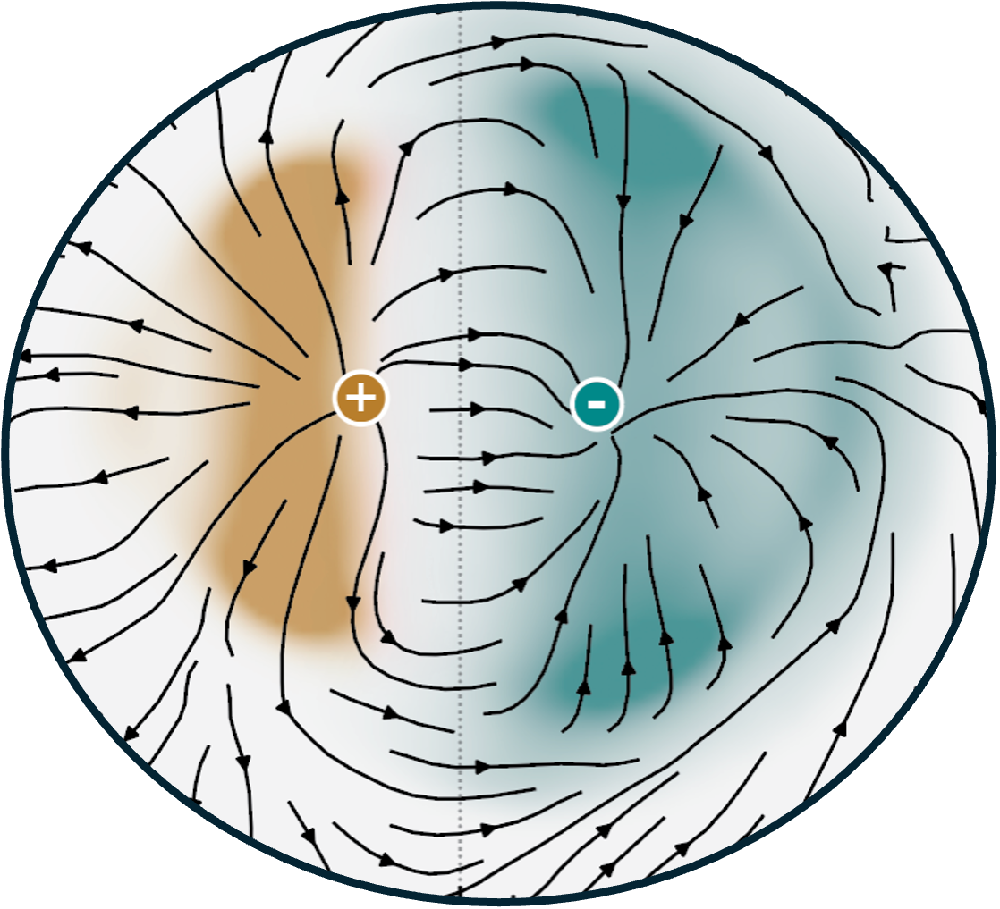
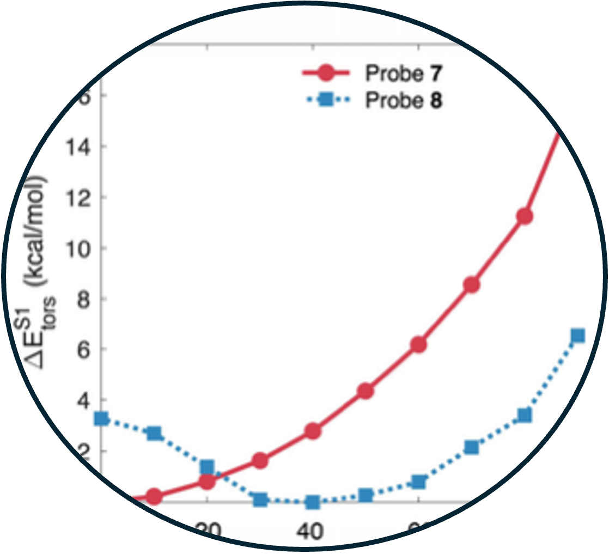
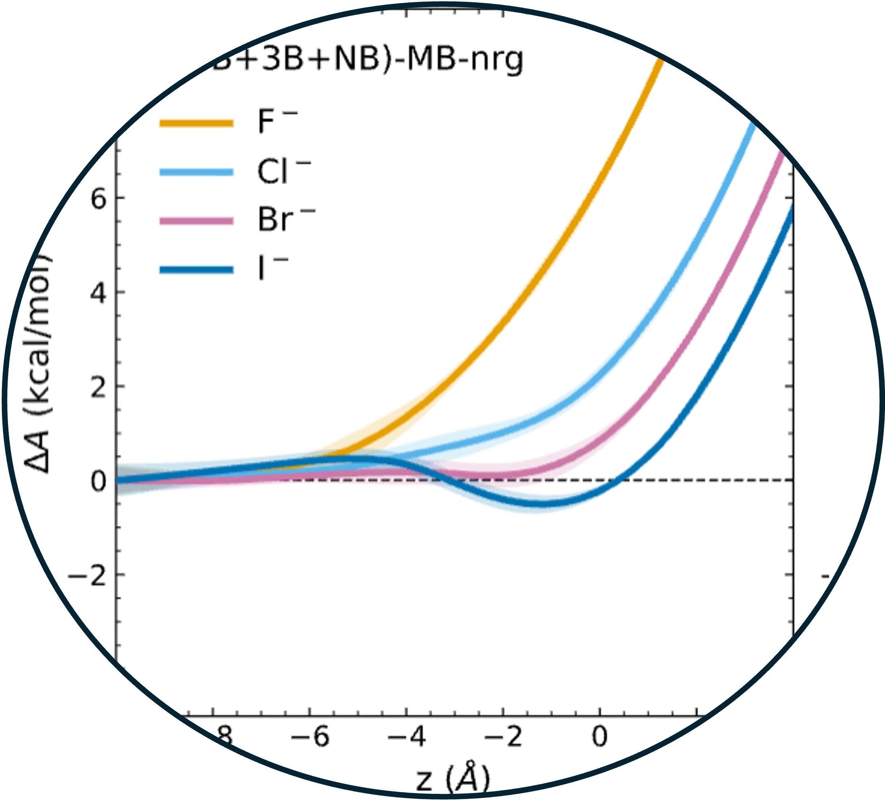

Publications

21. Halide Identity Shapes Ion Pairing and Solvent Dynamics in Aqueous Lithium Halide Electrolytes
Read Article ↗Predicting whether electrolytes associate or dissociate in water
is challenging because direct ion attraction, hydration, solvent caging, and collective
reorganization operate on comparable free-energy scales, and subtle changes in their
balance can reverse the preferred ion-pairing state. Here, we develop machine-learned
potentials trained on density-corrected r2SCAN to investigate how periodic trends across
the halide series govern the thermodynamics, structure, and dynamics of aqueous lithium
halide electrolytes. The resulting potentials of mean force reveal a systematic shift
from the strongly stabilized contact ion pair in LiF toward solvent-shared and
dissociated configurations for LiCl, LiBr, and LiI, with apparent dissociation
constants spanning nearly four orders of magnitude. This thermodynamic progression
emerges from the balance among direct ion attraction, hydration-shell stability, solvent
caging, and water-mediated screening. From F⁻ to I⁻, the halide hydration shell becomes
increasingly diffuse and labile, promoting solvent-mediated separation while
accelerating water exchange, orientational relaxation, and long-time translational
mobility. The same hydration contrast governs the coupling between ion separation and
solvent reorganization during association and dissociation. Together, these results
establish a unified molecular connection among association–dissociation equilibria,
hydration-shell dynamics, and solvent transport in aqueous electrolytes.

20. Development of Aryl Cyano Amides for Fluorescence Discrimination of Tau and Amyloid Beta Deposits in Tissue
Read Article ↗The accumulation of amyloid aggregates such as amyloid beta (Aβ)
and tau deposits in the brain is a hallmark of many neurodegenerative diseases including
Alzheimer's disease. Recent advances in optical imaging have shown that fluorescent
probes can detect amyloids in living patients, potentially aiding in diagnosis. Here, we
investigate structural modifications of amyloid-targeting Aryl Cyano Amide-based
fluorophores aimed at enhancing their ability to discriminate between different amyloid
aggregates, such as Aβ and tau. We identify two structural parameters that
synergistically enable increased sensitivity to environmental polarity, which makes it
possible to discriminate these amyloids through inspection of the color of fluorescence
emission. This colorimetric discrimination can provide detailed information on amyloid
composition and could expand the use of fluorescence imaging for diagnosis and
monitoring
of neurodegenerative diseases.
Before K-State


19. Many-body interactions resolve halide distribution at the air/water interface
Read Article ↗

18. Reactivity of Nanoconfined Water is Modulated by the Properties of Confining Materials
Read Article ↗The reactivity of water, a fundamental process in aqueous
chemistry, is profoundly altered under nanoconfinement. The properties of the confining
material determine the layer dependence of autoionization, dictating whether reactions
are stabilized at the interface or in the subsurface. In weakly interacting walls (Wall
A), hydroxide is destabilized at the interface and the reaction proceeds preferentially
in the subsurface, whereas in strongly interacting walls (Wall B) the interfacial and
subsurface states are nearly isoenergetic, reducing selectivity. This contrast arises
from confinement-enforced coordination motifs where hydronium remains tri- coordinated
across environments, while hydroxide is restricted to tetra coordination at the
interface but adopts hypercoordinated states in the subsurface. Mechanical flexibility
of the confining framework further modulates the overall thermodynamics by reducing the
entropic penalty, as water molecules can explore a broader configurational space
compared to rigid pores. These findings establish how layer-specific solvation and wall
flexibility govern confined-water reactivity, providing molecular-level design
principles for engineering dynamic nanoscale interfaces in catalysis, energy storage,
and molecular separations.


17. Intermolecular Interactions Override Chemical Intuition in Tuning Stacking and Electronic Properties of Functionalized Two-Dimensional Covalent Organic Frameworks
Read Article ↗Rising energy demands underscore the need for renewable energy
solutions such as solar energy. Covalent organic frameworks (COFs), with their tunable
compositions, structures, and photophysical properties, are promising candidates;
however, a comprehensive understanding of their composition-structure–property
relationships remains limited. Here, combining all-electron quantum chemistry with
coarse-grained Holstein Hamiltonians, we show that although slipped-stacked
configurations are generally most stable, the degree of slipping is strongly influenced
by the nature of the functional groups and does not follow simple electron- donating or
-withdrawing trends. While van der Waals interactions primarily drive the stacking
behavior, electrostatic contributions unique to each substituent modulate its extent.
Furthermore, we find that in highly symmetric lattice backbones, small substituent
changes have minimal effect on electronic structure, whereas symmetry-breaking
functionalization offers a robust and effective route to tune electronic, transport, and
photophysical properties. While the stacking arrangement primarily governs interlayer
electron coherence, its influence diminishes in the high-disorder regime. Our findings
provide fundamental insights and design principles to guide the development of
high-performance COFs for photocatalytic applications.


16. Sub-nanometer Confinement Suppresses Autoionization of Water
Read Article ↗Water confined within nanometer-scale environments plays a central
role in functional materials for nanofluidic and membrane-based applications, where
acid–base equilibria and proton transport govern essential processes such as ion
conduction, energy conversion, and chemical separations. Similar mechanisms are also
fundamental to biological systems, including enzyme catalysis and cellular signaling. At
sub-nanometer scales, confinement and interfacial interactions dramatically reshape the
molecular landscape, challenging conventional assumptions about pH and chemical
reactivity. Here, we combine density-corrected density functional theory with
machine-learned interatomic potentials to investigate the autoionization of water
confined to quasi-two-dimensional monolayers within sub-nanometer slit pores. We find
that extreme confinement markedly suppresses water autoionization, raising the effective
pKw by more than two units. This suppression originates from hydroxide ion
destabilization at interfaces, driven by restricted hydrogen bonding, hindered molecular
reorientation, and a breakdown of Grotthuss proton transport caused by topological
frustration in the hydrogen-bond network. These findings offer a molecular-level
understanding of how confinement modulates fundamental aqueous chemistry and establish
guiding principles for tuning aqueous phase reactivity in nanoscale environments.

15. Nuclear quantum effects and the Grotthuss mechanism dictate the pH of liquid water
Read Article ↗Water’s ability to autoionize into hydronium (H3O+) and hydroxide
(OH–) ions dictates the acidity or basicity of aqueous solutions, influencing the
reaction pathways of many chemical and biochemical processes. In this study, we
determine the molecular mechanism of the autoionization process by leveraging both the
computational efficiency of a deep neural network potential trained on highly accurate
data calculated within density-corrected density functional theory and the ability of
enhanced sampling techniques to ensure a comprehensive exploration of the underlying
multidimensional free-energy landscape. By properly accounting for nuclear quantum
effects, our simulations provide an accurate estimate of the autoionization constant of
liquid water (pKw = 13.71 ± 0.16), offering a realistic molecular-level picture of the
autoionization process and emphasizing its quantum-mechanical nature. Importantly, our
simulations highlight the central role played by the Grotthuss mechanism in stabilizing
solvent-separated ion pair configurations, revealing its profound impact on acid–base
equilibria in aqueous environments.


14. Eliminating imaginary vibrational frequencies in quantum-chemical cluster models of enzymatic active sites
Read Article ↗In constructing finite models of enzyme active sites for
quantum-chemical calculations, atoms at the periphery of the model must be constrained
to prevent unphysical rearrangements during geometry relaxation. A simple fixed-atom or
“coordinate-lock” approach is commonly employed but leads to undesirable artifacts in
the form of small imaginary frequencies. These preclude evaluation of finite-
temperature free-energy corrections, limiting thermochemical calculations to enthalpies
only. Full-dimensional vibrational frequency calculations are possible by replacing the
fixed-atom constraints with harmonic confining potentials. Here, we compare that
approach to an alternative strategy in which fixed-atom contributions to the Hessian are
simply omitted. While the latter strategy does eliminate imaginary frequencies, it tends
to underestimate both the zero-point energy and the vibrational entropy while
introducing artificial rigidity. Harmonic confining potentials eliminate imaginary
frequencies and provide a flexible means to construct active-site models that can be
used in unconstrained geometry relaxations, affording better convergence of reaction
energies and barrier heights with respect to the model size, as compared to models with
fixed-atom constraints.


13. Excited state rotational freedom impacts viscosity sensitivity in arylcyanoamide fluorescent molecular rotor dyes
Read Article ↗The microviscosity of intracellular environments plays an
important role in monitoring cellular function. Thus, the capability of detecting
changes in viscosity can be utilized for the detection of different disease states.
Viscosity-sensitive fluorescent molecular rotors are potentially excellent probes for
these applications; however, the predictable relationships between chemical structural
features and viscosity sensitivity are poorly understood. Here, we investigate a set of
arylcyanoamide-based fluorescent probes and the effect of small aliphatic substituents
on their viscosity sensitivity. We found that the location of the substituents and the
type of π- network of the fluorophore can significantly affect the viscosity sensitivity
of these fluorophores. Computational analysis supported the notion that the excited
state rotational energy barrier plays a dominant role in the relative viscosity
sensitivity of these fluorophores. These findings provide valuable insight into the
design of molecular rotor-based fluorophores for viscosity measurement.


12. Balance between physical interpretability and energetic predictability in widely used dispersion-corrected density functionals
Read Article ↗We assess the performance of different dispersion models for
several popular density functionals across a diverse set of noncovalent systems, ranging
from the benzene dimer to molecular crystals. By analyzing the interaction energies and
their individual components, we demonstrate that there exists variability across
different systems for empirical dispersion models, which are calibrated for reproducing
the interaction energies of specific systems. Thus, parameter fitting may undermine the
underlying physics, as dispersion models rely on error compensation among the different
components of the interaction energy. Energy decomposition analyses reveal that, the
accuracy of revPBE-D3 for some aqueous systems originates from significant compensation
between dispersion and charge transfer energies. However, revPBE-D3 is less accurate in
describing systems where error compensation is incomplete, such as the benzene dimer.
Such cases highlight the propensity for unpredictable behavior in various
dispersion-corrected density functionals across a wide range of molecular systems, akin
to the behavior of force fields. On the other hand, we find that SCAN-rVV10, a
targeted-dispersion approach, affords significant reductions in errors associated with
the lattice energies of molecular crystals, while it has limited accuracy in reproducing
structural properties. Given the ubiquitous nature of noncovalent interactions and the
key role of density functional theory in computational sciences, the future development
of dispersion models should prioritize the faithful description of the dispersion
energy, a shift that promises greater accuracy in capturing the underlying physics
across diverse molecular and extended systems.


11. Data-driven many-body potentials from density functional theory for aqueous phase chemistry
Read Article ↗Density functional theory (DFT) has been applied to modeling
molecular interactions in water for over three decades. The ubiquity of water in
chemical and biological processes demands a unified understanding of its physics, from
the single molecule to the thermodynamic limit and everything in between. Recent
advances in the development of data-driven and machine-learning potentials have
accelerated simulation of water and aqueous systems with DFT accuracy. However,
anomalous properties of water in the condensed phase, where a rigorous treatment of both
local and non-local many-body (MB) interactions is in order, are often unsatisfactory or
partially missing in DFT models of water. In this review, we discuss the modeling of
water and aqueous systems based on DFT and provide a comprehensive description of a
general theoretical/computational framework for the development of data-driven many-body
potentials from DFT reference data. This framework, coined MB-DFT, readily enables
efficient many-body molecular dynamics (MD) simulations of small molecules, in both gas
and condensed phases, while preserving the accuracy of the underlying DFT model.
Theoretical considerations are emphasized, including the role that the delocalization
error plays in MB-DFT potentials of water and the possibility to elevate DFT and MB-DFT
to near-chemical-accuracy through a density-corrected formalism. The development of the
MB-DFT framework is described in detail, along with its application in MB-MD simulations
and recent extension to the modeling of reactive processes in solution within a quantum
mechanics/MB molecular mechanics (QM/MB-MM) scheme, using water as a prototypical
solvent. Finally, we identify open challenges and discuss future directions for MB-DFT
and theory. Theories around delocalization error and strategies to elevate DFT...
QM/MB-MM simulations in condensed phases.

10. How good is the density-corrected SCAN functional for neutral and ionic aqueous systems, and what is so right about the Hartree-Fock density?
Read Article ↗Density functional theory (DFT) is the most widely used electronic
structure method, due to its simplicity and cost effectiveness. The accuracy of a DFT
calculation depends not only on the choice of the density functional approximation (DFA)
adopted but also on the electron density produced by the DFA. SCAN is a modern
functional that satisfies all known constraints for meta-GGA functionals. The
density-driven errors, defined as energy errors arising from errors of the
self-consistent DFA electron density, can hinder SCAN from achieving chemical accuracy
in some systems, including water. Density-corrected DFT (DC-DFT) can alleviate this
shortcoming by adopting a more accurate electron density which, in most applications, is
the electron density obtained at the Hartree–Fock level of theory due to its relatively
low computational cost. In this work, we present extensive calculations aimed at
determining the accuracy of the DC-SCAN functional for various aqueous systems. DC-SCAN
(SCAN@HF) shows remarkable consistency in reproducing reference data obtained at the
coupled cluster level of theory, with minimal loss of accuracy. Density-driven errors in
the description of ionic aqueous clusters are thoroughly investigated. By comparison
with the orbital-optimized CCD density in the water dimer, we find that the
self-consistent SCAN density transfers a spurious fraction of an electron across the
hydrogen bond to the hydrogen atom (H*, covalently bound to the donor oxygen atom) from
the acceptor (OA) and donor (OD) oxygen atoms, while HF makes a much smaller spurious
transfer in the opposite direction, consistent with DC-SCAN (SCAN@HF) reduction of SCAN
overbinding due to delocalization error. While LDA seems to be the conventional extreme
of density delocalization error, and HF the conventional extreme of (usually much
smaller) density localization error, these two densities do not quite yield the
conventional range of density-driven error in energy differences. Finally, comparisons
of the DC-SCAN results with those obtained with the Fermi-Löwdin orbital
self-interaction correction (FLOSIC) method show that DC-SCAN represents a more accurate
approach to reducing density-driven errors in SCAN calculations of ionic aqueous
clusters. While the HF density is superior to that of SCAN for noncompact water
clusters, the opposite is true for the compact water molecule with exactly 10 electrons.


9. Density functional theory of water with the machine-learned DM21 functional
Read Article ↗The delicate interplay between functional-driven and
density-driven errors in density functional theory (DFT) has hindered traditional
density functional approximations (DFAs) from providing an accurate description of water
for over 30 years. Recently, the deep- learned DeepMind 21 (DM21) functional has been
shown to overcome the limitations of traditional DFAs as it is free of delocalization
error. To determine if DM21 can enable a molecular-level description of the physical
properties of aqueous systems within Kohn– Sham DFT, we assess the accuracy of the DM21
functional for neutral, protonated, and deprotonated water clusters. We find that the
ability of DM21 to accurately predict the energetics of aqueous clusters varies
significantly with cluster size. Additionally, we introduce the many-body MB-DM21
potential derived from DM21 data within the many-body expansion of the energy and use it
in simulations of liquid water as a function of temperature at ambient pressure. We find
that size-dependent functional-driven errors identified in the analysis of the
energetics of small clusters calculated with the DM21 functional result in the MB-DM21
potential systematically overestimating the hydrogen-bond strength and, consequently,
predicting a more ice-like local structure of water at room temperature.

8. Assessing the interplay between functional-driven and density-driven errors in DFT models of water
Read Article ↗We investigate the interplay between functional-driven and
density-driven errors in different density functional approximations within density
functional theory (DFT) and the implications of these errors for simulations of water
with DFT-based data-driven potentials. Specifically, we quantify density-driven errors
in two widely used dispersion-corrected functionals derived within the generalized
gradient approximation (GGA), namely BLYP-D3 and revPBE-D3, and two modern meta-GGA
functionals, namely strongly constrained and appropriately normed (SCAN) and B97M-rV.
The effects of functional-driven and density-driven errors on the interaction energies
are first assessed for the water clusters of the BEGDB dataset. Further insights into
the nature of functional-driven errors are gained from applying the absolutely localized
molecular orbital energy decomposition analysis (ALMO-EDA) to the interaction energies,
which demonstrates that functional-driven errors are strongly correlated with the nature
of the interactions. We discuss cases where density- corrected DFT (DC-DFT) models
display higher accuracy than the original DFT models and cases where reducing the
density-driven errors leads to larger deviations from the reference energies due to the
presence of large functional-driven errors. Finally, molecular dynamics simulations are
performed with data-driven many-body potentials derived from DFT and DC-DFT data to
determine the effect that minimizing density-driven errors has on the description of
liquid water. Besides rationalizing the performance of widely used DFT models of water,
we believe that our findings unveil fundamental relations between the shortcomings of
some common DFT approximations and the requirements for accurate descriptions of
molecular interactions, which will aid the development of a consistent, DFT-based
framework for the development of data-driven and machine-learned potentials for
simulations of condensed- phase systems.

7. Elevating density functional theory to chemical accuracy for water simulations through a density- corrected many-body formalism
Read Article ↗Density functional theory (DFT) has been extensively used to model
the properties of water. Albeit maintaining a good balance between accuracy and
efficiency, no density functional has so far achieved the degree of accuracy necessary
to correctly predict the properties of water across the entire phase diagram. Here, we
present density-corrected SCAN (DC-SCAN) calculations for water which, minimizing
density-driven errors, elevate the accuracy of the SCAN functional to that of “gold
standard” coupled-cluster theory. Building upon the accuracy of DC-SCAN within a
many-body formalism, we introduce a data-driven many-body potential energy function,
MB-SCAN(DC), that quantitatively reproduces coupled cluster reference values for
interaction, binding, and individual many- body energies of water clusters. Importantly,
molecular dynamics simulations carried out with MB-SCAN(DC) also reproduce the
properties of liquid water, which thus demonstrates that MB-SCAN(DC) is effectively the
first DFT-based model that correctly describes water from the gas to the liquid phase.

6. General many- body framework for data-driven potentials with arbitrary quantum mechanical accuracy: Water as a case study
Read Article ↗We present a general framework for the development of data-driven
many-body (MB) potential energy functions (MB-QM PEFs) that represent the interactions
between small molecules at an arbitrary quantum-mechanical (QM) level of theory. As a
demonstration, a family of MB-QM PEFs for water is rigorously derived from density
functionals belonging to different rungs across Jacob’s ladder of approximations within
density functional theory (MB-DFT) and from Møller–Plesset perturbation theory (MB-MP2).
Through a systematic analysis of individual MB contributions to the interaction energies
of water clusters, we demonstrate that all MB-QM PEFs preserve the same accuracy as the
corresponding ab initio calculations, with the exception of those derived from density
functionals within the generalized gradient approximation (GGA). The differences between
the DFT and MB-DFT results are traced back to density- driven errors that prevent GGA
functionals from accurately representing the underlying molecular interactions for
different cluster sizes and hydrogen-bonding arrangements. We show that this shortcoming
may be overcome, within the MB formalism, by using density-corrected functionals
(DC-DFT) that provide a more consistent representation of each individual MB
contribution. This is demonstrated through the development of a MB-DFT PEF derived from
DC-PBE-D3 data, which more accurately reproduce the corresponding ab initio results.

5. Software for the frontiers of quantum chemistry: An overview of developments in the Q-Chem 5 package
Read Article ↗This article summarizes technical advances contained in the fifth
major release of the Q-Chem quantum chemistry program package, covering developments
since 2015. A comprehensive library of exchange–correlation functionals, along with a
suite of correlated many-body methods, continues to be a hallmark of the Q-Chem
software. The many-body methods include novel variants of both coupled-cluster and
configuration-interaction approaches along with methods based on the algebraic
diagrammatic construction and variational reduced density-matrix methods. Methods
highlighted in Q-Chem 5 include a suite of tools for modeling core-level spectroscopy,
methods for describing metastable resonances, methods for computing vibronic spectra,
the nuclear–electronic orbital method, and several different energy decomposition
analysis techniques. High-performance capabilities including multithreaded parallelism
and support for calculations on graphics processing units are described. Q-Chem boasts a
community of well over 100 active academic developers, and the continuing evolution of
the software is supported by an “open teamware” model and an increasingly modular
design.


4. Ab initio approach to femtosecond stimulated Raman spectroscopy: Investigating vibrational modes probed in excited- state relaxation of quaterthiophene.
Read Article ↗Femtosecond stimulated Raman spectroscopy (FSRS) is an ultrafast
pump–probe technique designed to elucidate excited-state molecular dynamics by means of
vibrational spectroscopy. We present a first-principles protocol for the simulation of
FSRS that integrates ab initio molecular dynamics with computational resonance Raman
spectroscopy. Theoretical calculations can monitor the time-dependent evolution of
specific vibrational modes and thus provide insight into the nature of the motion
responsible for the experimental FSRS signal, and we apply this technique to study
quaterthiophene derivatives. The S1 state of two different quaterthiophene derivatives
relaxes via in-phase and out-of-phase stretching modes whose frequencies are coupled to
the dihedral backbone angle, such that the spectral evolution reflects the excited-state
relaxation toward a planar conformation. The simulated spectra aid in confirming the
experimental assignment of the vibrational modes that are probed in the existing FSRS
experiments on quaterthiophenes.

3. Using atomic confining potentials for geometry optimizations and vibrational frequency calculations in quantum-chemical models of enzyme active sites.
Read Article ↗Quantum-chemical studies of enzymatic reaction mechanisms
sometimes use truncated active-site models as simplified alternatives to mixed quantum
mechanics molecular mechanics (QM/MM) procedures. Eliminating the MM degrees of freedom
reduces the complexity of the sampling problem, but the trade-off is the need to
introduce geometric constraints in order to prevent structural collapse of the model
system during geometry optimizations that do not contain a full protein backbone. These
constraints may impair the efficiency of the optimization, and care must be taken to
avoid artifacts such as imaginary vibrational frequencies. We introduce a simple
alternative in which terminal atoms of the model system are placed in soft harmonic
confining potentials rather than being rigidly constrained. This modification is simple
to implement and straightforward to use in vibrational frequency calculations, unlike
iterative constraint-satisfaction algorithms, and allows the optimization to proceed
without constraint even though the practical result is to fix the anchor atoms in space.
The new approach is more efficient for optimizing minima and transition states, as
compared to the use of fixed-atom constraints, and also more robust against unwanted
imaginary frequencies. We illustrate the method by application to several enzymatic
reaction pathways where entropy makes a significant contribution to the relevant
reaction barriers. The use of confining potentials correctly describes reaction paths
and facilitates calculation of both vibrational zero-point and finite-temperature
entropic corrections to barrier heights.

2. Ab initio investigation of the resonance Raman spectrum of the hydrated electron
Read Article ↗According to the conventional picture, the aqueous or “hydrated”
electron, e–(aq), occupies an excluded volume (cavity) in the structure of liquid water.
However, simulations with certain one-electron models predict a more delocalized spin
density for the unpaired electron, with no distinct cavity structure. It has been
suggested that only the latter (non-cavity) structure can explain the hydrated
electron’s resonance Raman spectrum, although this suggestion is based on calculations
using empirical frequency maps developed for neat liquid water, not for e–(aq).
All-electron ab initio calculations presented here demonstrate that both cavity and non-
cavity models of e–(aq) afford significant red-shifts in the O–H stretching region. This
effect is nonspecific and arises due to electron penetration into frontier orbitals of
the water molecules. Only the conventional cavity model, however, reproduces the
splitting of the H–O–D bend (in isotopically mixed water) that is observed
experimentally and arises due to the asymmetric environments of the hydroxyl moieties in
the electron’s first solvation shell. We conclude that the cavity model of e–(aq) is
more consistent with the measured resonance Raman spectrum than is the delocalized,
non-cavity model, despite previous suggestions to the contrary. Furthermore,
calculations with hybrid density functionals and with Hartree–Fock theory predict that
non-cavity liquid geometries afford only unbound (continuum) states for an extra
electron, whereas in reality this energy level should lie more than 3 eV below vacuum
level. As such, the non-cavity model of e–(aq) appears to be inconsistent with available
vibrational spectroscopy, photoelectron spectroscopy, and quantum chemistry.


1. Standard grids for high-precision integration of modern density functionals: SG-2 and SG-3
Read Article ↗Density-functional approximations developed in the past decade
necessitate the use of quadrature grids that are far more dense than those required to
integrate older generations of functionals. This category of difficult-to-integrate
functionals includes meta- generalized gradient approximations, which depend on orbital
gradients and/or the Laplacian of the density, as well as functionals based on B97 and
the popular “Minnesota” class of functionals, each of which contain complicated and/or
oscillatory expressions for the exchange inhomogeneity factor. Following a strategy
introduced previously by Gill and co-workers to develop the relatively sparse “SG-0” and
“SG-1” standard quadrature grids, we introduce two higher-quality grids that we
designate SG-2 and SG-3, obtained by systematically “pruning” medium- and high-quality
atom-centered grids. The pruning procedure affords computational speedups approaching a
factor of two for hybrid functionals applied to systems of ~100 atoms, without
significant loss of accuracy. The grid dependence of several popular density functionals
is characterized for various properties.